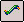
Wire commandDefines attributes for a wire.
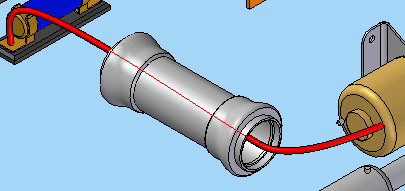
Workflow for creating wires
Using the Wire command to create a wire consists of two steps:
-
Defining the wire path.
-
Applying properties to the wire.
Defining the wire path
When you select the Wire command, the Wire command bar is displayed in the Path step.
When defining the wire path, you may define points to create a new path
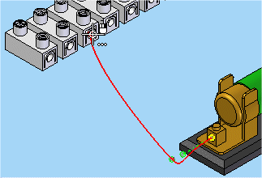
or select an existing path, created with the Path command.
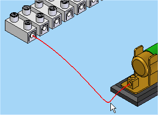
When creating the 3-D path, you can specify a key point,
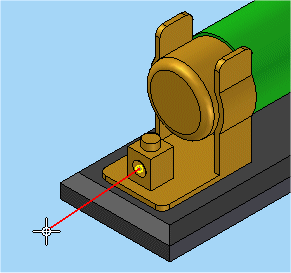
a cylindrical axis,
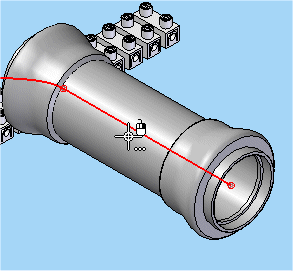
or a point in space.
By default, the Circular Cutout option is selected on the command bar. When using this option, be aware that the direction of the path changes based on the side of the cylindrical face that you select.
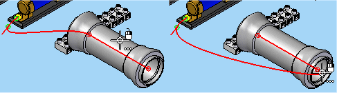
Once you define the first point, the Relative/Absolute Position option becomes active to allow you to specify if a point is relative to the point's current position or is based on the global origin of the document.
When defining points for the path, you can switch between the Circular Cutout and the Keypoint Locate options.
Continue to use these options to define the points for the path.
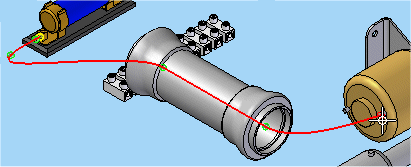
After defining the final point, click the Accept (checkmark) button to complete the path definition.
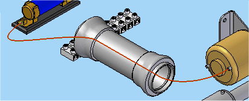
Applying properties to the wire
Once you finish defining the path, the command bar moves to the Properties step.
You can select the Material property from a list that contains values found in the wires portion of the SEConductors.txt file located in the Solid Edge Preferences folder. You can also click the Properties button to display the Properties dialog box, which allows you to change the properties for the wire. For pre-defined properties such as Slack and Clearance Through Holes, you can use the default values that are specified on the Harness tab of the Options dialog box, or you can type in a value.
After defining the properties for the wire, click the Preview button to accept the input and move to the Finish step where the default wire name is displayed. At this point you can change the wire name, return to the previous step to make changes, or click Finish to complete the command.
After creating the wire, it is listed in Assembly PathFinder in the Wires section.
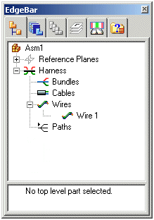
Displaying bi-color wires
You can display bi-color wires in Solid Edge Electrical Routing.
There are several standard bi-color wires in the list of materials in the Wire Properties dialog box. When you select a bi-color wire, the colors are assigned to the Primary Color and Secondary Color fields on the Wire Properties dialog box.
Use the Pattern Type field on the dialog box to specify the pattern for the colors on the wire. Solid Edge supports the following pattern types:
|
Pattern type |
|
|---|---|
|
Single Strip |
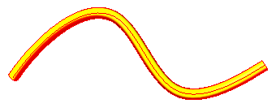 |
|
Helical |
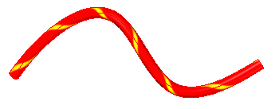 |
|
Zebra |
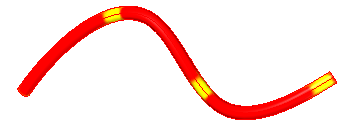 |
|
Dash |
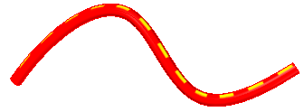 |
To see the desired textures on wires in the Electrical Routing environment, select the Textures options on the View Overrides dialog box.
How do I
Route a harness entity along a surfaceEdit the path of a electrical routing conductor
Construct a path through selected keypoints
Display Properties for a Harness Element
Create a wire
Create a cable
Create a wire harness bundle
Add a splice
Display Harness Elements
Create a harness component solid body
Delete a wire component solid body
Learn more
Creating the electrical routing manuallyCreating harness component solid bodies
Removing conductors
Look up more details
Path commandEdit Path Command
Path command bar
Route command
Route along Surface command
Route along Surface command bar
Show All Paths command
Wire command bar
Show All Wires command
Hide All Wires command
Wire Properties Command
Cable command
Cable command bar
Show All Cables command
Hide All Cables command
Bundle command
Bundle command bar
Show All Bundles command
Hide All Bundles command
Splice command
Splice command bar
Splice Properties dialog box
Assign Terminals dialog box (Splice)
Create Physical Conductor command
Delete Physical Conductor command
Show Physical Conductor command
Show All Physical Conductors command
Hide Physical Conductor command
Hide All Physical Conductors command
Show All Harnesses command
Hide All Harnesses command
Remove command (Electrical Routing)
PathFinder in electrical routing
Related Topics
Create a bundle across a spliceAdd a wire to a splice
Remove a wire from a splice
Change the splice location
Change splice properties